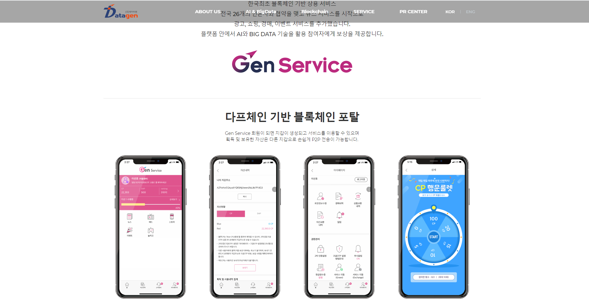
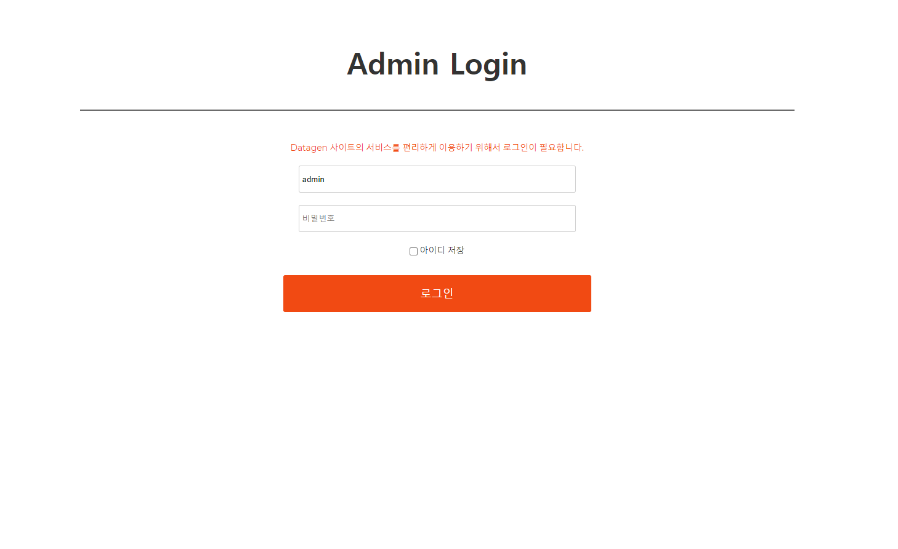

사내 사이트 관리자
회사 홈페이지 리매뉴얼 작업을 하면서 처음으로 진행했던 사내 WEB 프로젝트로 기억이 많이 남습니다. 작업 기간은 약 2달로 스터디
위주로 프로젝트를 진행했습니다.
Jquery 문법과 AJAX를 처음 알게 되었고, MVC 패턴과 CRUD의 기본을 알게 된 프로젝트입니다. 프로젝트 이후 Spring 프로젝트에
참여하게 되었습니다.
프로젝트는 Click WEB site 에서 확인할 수 있습니다.
Technologies:
- - JAVA
- - Spring Framework
- - JSP
- - MariaDB
- - MyBatis
- - AWS (EC2 & S3)
- - OS(CentOS7)
회사 관리자 로그인 화면
